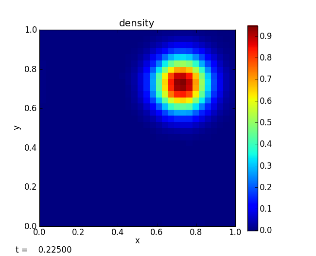

Advection examples
smooth
The smooth problem initializes a Gaussian profile and advects it with u = v = 1 through periodic boundaries for a period. The result is that the final state should be identical to the initial state---any disagreement is our numerical error. This is run as:
./pyro.py advection smooth inputs.smooth

By varying the resolution and comparing to the analytic solution, we can measure the convergence rate of the method. The smooth_error.py script in analysis/ will compare an output file to the analytic solution for this problem.

The points above are the L2-norm of the absolute error for the smooth advection problem after 1 period with CFL=0.8. The dashed line is perfect 2nd order convergence. We see that we achieve nearly 2nd order convergence. Departures from perfect 2nd order convergence are likely due to the use of limiters.